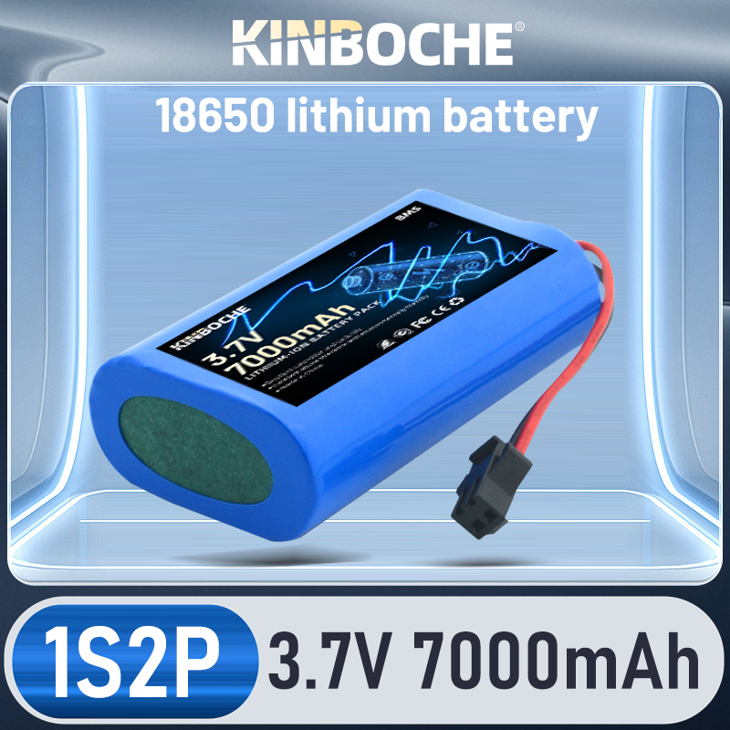
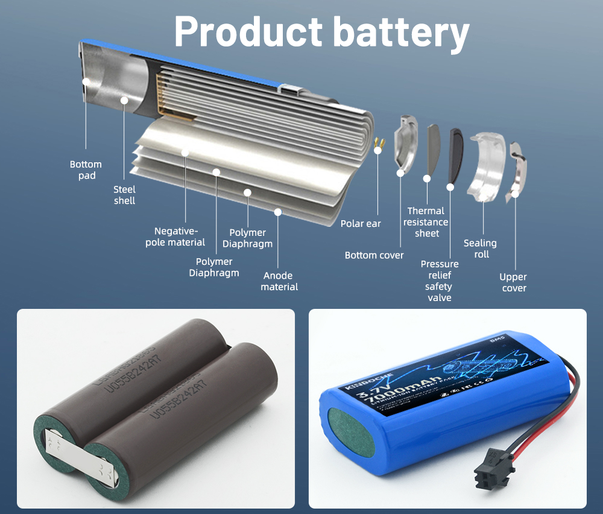
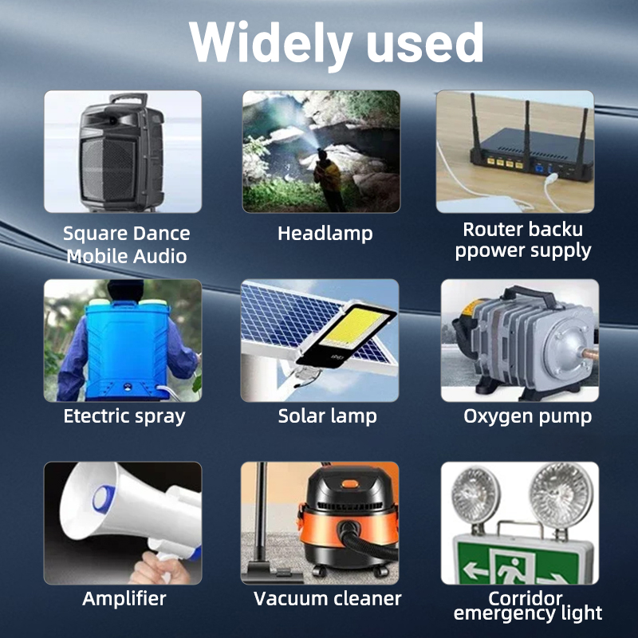
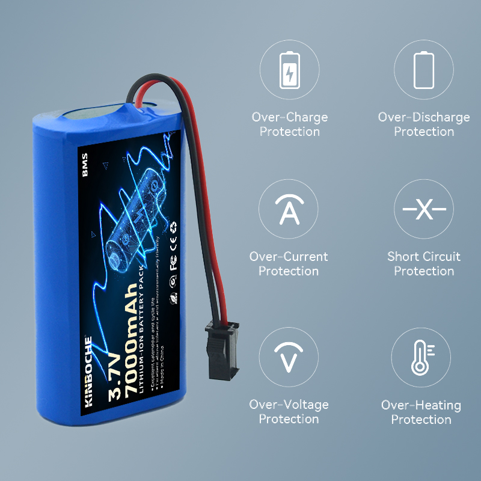
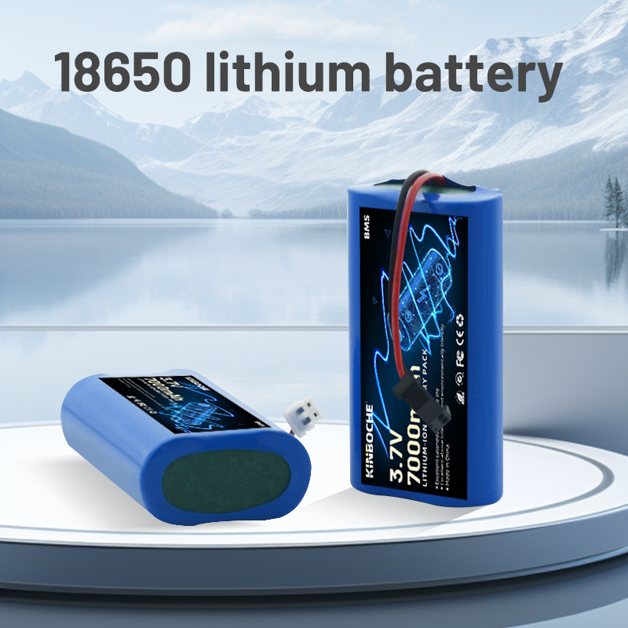
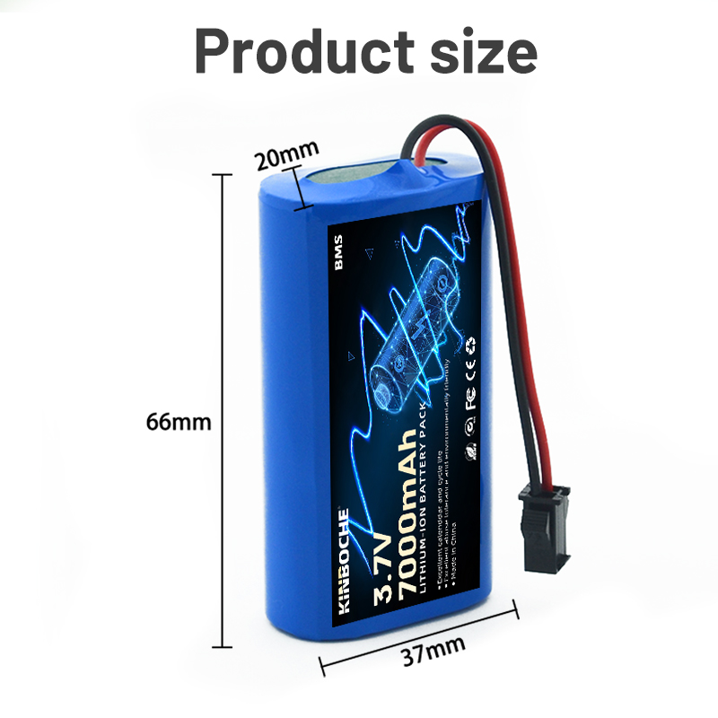

Note:
Red anode, black negative electrode; Before installation, carefully check whether the positive and negative poles of the new and old plugs are the same, and confirm that they are completely identical before installation.
If you have any other requirements, please contact the customer service department for personalized settings.
[Product parameters]
Model: 3.7 V 8Ah
Charging voltage: 4.2 V
Rated capacity: 7000 mAh
Charging method: CC-CV
Maximum charging current: 3a
Cycle life: 500 cycles (80% Ministry of Defense)
Voltage: 3.7 V
Standard weight: 95g
Size: 37 * 19 * 66mm
Packaging: Heat shrink PVC
Battery packs are widely used in headlights, mining lamps, flashlights, reflectors, speakers, wireless monitoring devices, medical equipment, instruments, traffic signs, and small portable household appliances
Advantages of using lithium batteries:
1. Small size, light weight, large capacity, environmentally friendly, and no memory effect.
2. It is the power source for portable electronic devices, but the most exquisite lithium-ion battery in use, please pay attention to the following points.
Warning:
1. Reverse charging is not allowed, and the battery must have precise polarity connections instead of reverse connections.
2. Do not short circuit, otherwise it will cause permanent damage.
3. Batteries should not be used under extreme conditions, such as temperature limitations, deep cycling, extreme overload, and excessive discharge.
4. Store the battery in a cool and dry place.
5. Do not weld directly to the battery.
If there are abnormal situations such as battery noise, high temperature, leakage, etc., please stop using immediately.
7. Do not put it into a fire or attempt to remove it, as the battery may burn or produce harmful substances.
8. Do not mix old batteries or half of the batteries with new batteries, as it may cause excessive discharge.
9. Do not cut the casing and remove the battery from the casing.
10. Do not let the battery be placed in water.
11. Press the charging method and charge with an appropriate charger.
When the battery is not in use, it must be removed from the device.
13. When using a new battery for the first time or after long-term storage, it must be fully charged before use





